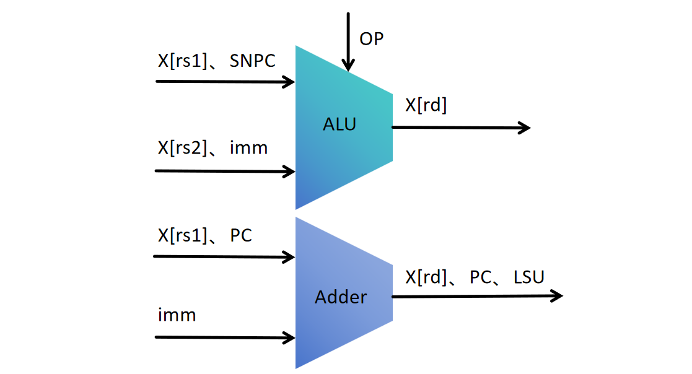
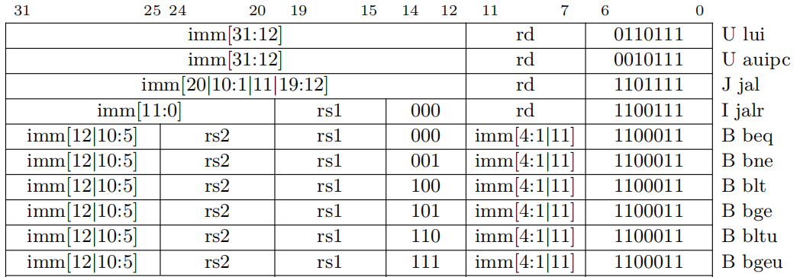
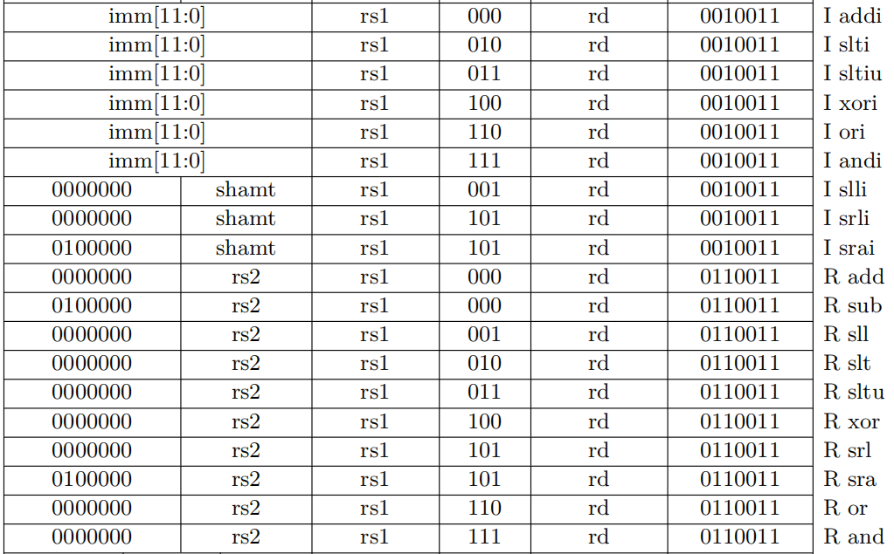

处理器设计一
在上一次实验中，我们对上学期的数字逻辑实验做了简单的总结，完成了ALU的设计。 实验二就提到过，ALU只能通过操作码对输入的数进行运算，距离我们的 这次实验我们会基于之前的部分，完成整个处理器的其他部分设计。
通过以下命令获取本次实验代码框架：
git clone https://github.com/yuweijie-20030124/suat-compution_organization.git
1 执行单元
从 RISC-V 的指令来看，我们完成的 ALU 还不能完成一些指令的功能，比如条件分支指令， 它既需要使用比较器比较出两数的大小关系，还需要通过PC值和立即数计算出跳转的地址， 因此本质上需要两个加法器，一个用来做比较，一个用来计算地址。
因此还需要增加一个加法器，似乎就能满足绝大部分指令的计算需求了。 再分析一下操作数的来源，有X[rs1]、X[rs2]（rs1、rs2索引的寄存器）、立即数、PC值。 此外我们还得对ALU部分稍微改造一下。
1.1 修改ALU
准确来说是还需要扩充比较的类型，我们还需要比较两数是否相等，是否大于等于。 两数相等在介绍异或门时有讲，如果忘记了可以去回顾一下这个部分内容，不相等就是相等进行取反。 大于等于其实和小于是互斥事件，所以只需要对小于取反，一个数不是小于，就一定大于等于另一个数。
我们的ALU可以输出比较的结果，用于条件分支判断。
电路的含义
总有同学会提问到，我在做别的运算（XX运算）的时候，需要输出比较结果（XX结果）吗？ 其实，你的电路设计出来，它肯定会有输入，有输出的。你的输入可以是无效的输入，比如你实际做的与运算， 那么比较的结果就是根本不需要关心的；相当于是无效的输入，则会是无效的输出。即使你正在做比较， 需要比较A是否小于B，那么等于、大于等于、或者两数相减的结果对你来说都是无效的信号，但这些信号都会存在， 也会有正确的值，但对于比较是否小于来说不需要关心这些信号的值。
只要你需要判断A是不是大于等于B，那这部分电路就必然存在了，不会因为正在执行别的指令，这部分电路就消失了。 我们实际要做的是从这一堆存在的电路中，选择出当前需要关注的信号值。
ALU 的模块框架我们也修改好了，你需要完成缺失的电路功能。
完善ALU
ALU需要能够输出两数的大小关系：小于、等于、不等于、大于等于。你需要将这些信号编码进行输出， 比如使用独热码（框架默认），这些信号在执行单元中用于条件跳转判断。
1.2 完成执行单元
执行单元多了一个地址加法器，多了一些操作数，多了一些控制信号，输出的目的地也多了一些。
执行单元需要发出跳转信号，需要对 ALU 的比较结果与分支跳转控制信号进行核验，
如果满足要求，则会发出跳转信号；此外还有无条件跳转指令： JAL 和 JALR 两条指令，
一定会发出跳转信号。地址加法器则完成跳转地址的计算。

这个执行单元就能够满足基础指令的需求，相比实验二几乎没有复杂多少。
完善执行单元
执行单元的代码框架已经给出，按照讲义的描述，执行单元有4个数据输入， 其中1和2是只输入给ALU，3和4只输入给地址加法器，用于简化执行单元的译码逻辑。
2 译码单元
执行单元的数据通路需要依赖译码单元的控制信号。
以上面执行单元示意图为例，对于 JALR 指令，其指令格式与 I 型指令相同，因此数据可以经过上方 ALU 选择加法器的结果，输出到 PC 寄存器中。
当然也可以通过下方的地址加法器，输出到 PC 寄存器中。通过地址加法器输出到 PC 寄存器是一个不错的想法，因为条件分支指令也是通过地址加法器输出到 PC 寄存器，
相当于可以共享这条已经存在的路径。而经过上方的 ALU 输出到 PC 寄存器，则相当于需要新开辟一条路径。
对于其他指令，比如 LUI 指令，同样是可以经过上面的 ALU ，或者经过下面的地址加法器，这个就留给你来设计了。
因此，在译码单元中就需要和执行单元配合起来，和实验二里面一样，你可以使用独热码来作为执行单元中的操作码，控制数据通路。
2.1 熟悉译码单元
以条件分支指令为例，我们已经帮你把指令译码出来了，如下代码所示。
1 assign inst_beq = type_branch & ~funct3[2] & ~funct3[1] & ~funct3[0] ;
2 assign inst_bne = type_branch & ~funct3[2] & ~funct3[1] & funct3[0] ;
3 assign inst_blt = type_branch & funct3[2] & ~funct3[1] & ~funct3[0] ;
4 assign inst_bge = type_branch & funct3[2] & ~funct3[1] & funct3[0] ;
5 assign inst_bltu = type_branch & funct3[2] & funct3[1] & ~funct3[0] ;
6 assign inst_bgeu = type_branch & funct3[2] & funct3[1] & funct3[0] ;
译码出来具体的指令用于控制数据通路，如图所示，funct3是为了在已经区分出指令类型（也就是这里的type_branch）的情况下，用于区分同类型指令的不同指令(也就是这里的beq，bne，blt，bge，bltu，bgeu)，那我们就可以通过指令的opcode和func3来决定我们当前指令是什么。
举个例子，由图可知B型指令的type_branch是"1100011"，beq的funct3是"000"，因此我们用 assign inst_beq = type_branch & ~funct3[2] & ~funct3[1] & ~funct3[0] 这条语句来得出当前指令是beq。，其他指令同理。
hint:type_branch


在译码单元里面，还有很多需要译码的部分，比如哪些指令会用到立即数，源寄存器，PC值等。
译码立即数的类型，如下代码所示：
1 always @(*) begin
2 if (type_load | type_i | inst_jalr) begin
3 imm = {{20{i_imm[11]}}, i_imm}; // i_imm扩展为32位
4 end
5 else if (inst_lui | inst_auipc) begin
6 imm = {u_imm, 12'b0}; // u_imm扩展为32位
7 end
8 else if (inst_jal) begin
9 imm = {{11{j_imm[20]}}, j_imm[20:1], 1'b0}; // j_imm扩展为32位，注意左移1位
10 end
11 else if (type_store) begin
12 imm = {{20{s_imm[11]}}, s_imm}; // s_imm扩展为32位
13 end
14 else if (type_branch) begin
15 imm = {{19{b_imm[12]}}, b_imm, 1'b0}; // b_imm扩展为32位，注意左移1位
16 end
17 else begin
18 imm = `SUAT_ZERO32; // 默认值
19 end
20 end
通过指令的类型选择立即数的类型。
我们的操作数有4个通道，则通道4为立即数的条件，如下代码所示：
1 data3 = rs1_data & {32{inst_jalr}} | pc & {32{type_branch | inst_auipc | inst_jal}};
也就是说，对于数据通道3来说，当指令为 JALR 时为 X[rs1]；
当指令为条件分支指令、 AUIPC 指令和 JAL 指令时为 PC 值。
你需要清晰的掌握数据的流向，由你设计操作数应该流向哪个运算部件，最后送回哪里。 这就是译码单元需要完成的工作，解析指令，然后精准地发送控制信号，使得数据通路完成指令的功能。
完善译码单元
完善译码单元，发出控制信号配合执行单元，完成以下表格的指令数据通路控制； 发出控制信号，配合执行单元完成跳转信号的控制，实现非条件跳转和条件跳转； 最后控制信号还需要对ALU和地址加法器的输出进行控制，输出到合适的路径：目的地寄存器或者PC寄存器。

本次实验能够实现以上指令的数据通路，包括实验二中实现的 ALU ，能够实现如下表格的运算指令。
